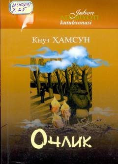

OOchlik azobida qolgan yosh yozuvchining ruhiy iztiroblari haqidagi mashhur roman.
Knut Hamsunning ushbu mashhur romani Kristiania shahrida och-nahor sargardonlikda yashayotgan yosh yozuvchining ruhiy va jismoniy kechinmalarini tasvirlaydi. Asar jahon adabiyotidagi modernizm yo'nalishining eng yirik namunalaridan biri hisoblanadi.